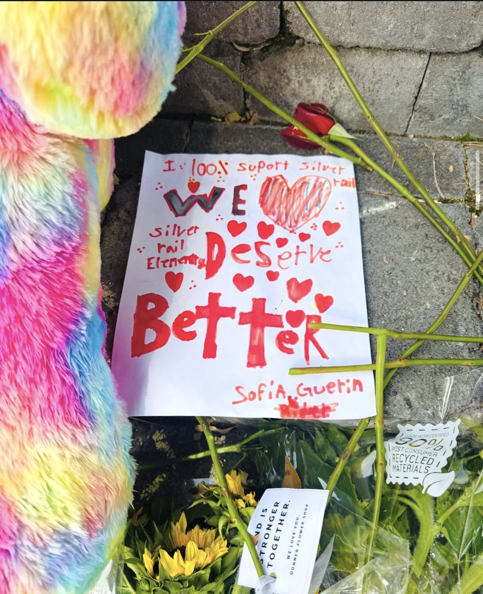

Every child who was in the building that day.
Supported for as long as they're growing up.
On October 15, 2026, our children carried a day no child should ever have to. We are Silver Rail parents, and we built this fund to stand beside every child who was in that building — not just today, but for every step of their growing up. What they need to feel like kids again, now. Care and resources when things feel heavy. Scholarships when they're ready. No applications, no expiration, and 100% to our kids' healing, joy, and future.
There was a gap. So we filled it ourselves.
Hundreds of our kids heard it, hid from it, and were walked out past it. They're going to carry that for the rest of their lives. And until now, there was nothing that supported their needs directly — not for this weekend, and not for the years ahead.
This fund started when Silver Rail parents tried to arrange a field trip for all Silver Rail kids to the local pumpkin patch next week — children who so desperately want to be kids again and play with their classmates. We weren't asking for a donation; we wanted to pay a local farm. We learned there was no fund that could do that. So we built one.

If a child was in that building on October 15, they are automatically included. Parents simply let us know what will help their child heal, play, or grow — and we handle the cost directly. Healing shouldn't come with paperwork.
A fund tied to a school ends the day a child leaves it. This fund supports the child as they grow up. The fifth grader who moves on in June, the family that can't walk back through those doors and ends up switching schools or homeschooling, the kid who moves across town — every one of them is still in, through middle school, high school, and college.
Silver Rail may not reopen until after Thanksgiving, or even the new year. Until then our kids are home, apart from their classmates, and what they need most is each other. The weeks after they return to school will be some of the hardest. So will the day another school shooting is on the news. Grief isn't linear. Our kids deserved better, and your support helps them get what they need, when they need it.


What we'll do for them, in order.
We believe no family should ever have to prove their trauma to receive help. If your child was enrolled at Silver Rail on October 15, this fund was created to support them. Parents tell us what their child needs — from a season of soccer to specialized therapy — and we cover the bill.
What they need right now
Parents know what their own child needs right now — a day painting ceramics, getting the wiggles out at the trampoline gym, a swim at Larkspur or Juniper, a movie with classmates at McMenamins. This survivors fund supports what their kids actually want and need.
Resources as needed
When other support runs out, we're still here — funding therapy, activities, and ways of keeping these kids together that kids actually want, months and years after everyone else has moved on. Our kids deserve the chance to be kids again.
Scholarships at 18
A scholarship waiting for each child when they're ready for college or trade school — wherever life has taken them by then.
Our first sponsor.

Midtown Yacht Club
Midtown Yacht Club has been raising money for Silver Rail families and kids since the first days, and is sponsoring our very first activity: a field trip for Silver Rail kids to the pumpkin patch. The first thing this fund does for our children happens because of them.
midtownyachtclub.com — go say thank you with a beer.
Sponsor a Silver Rail kid.
We're not asking you to give anything away. We pay you — at your group rate if you offer one, your regular price if you don't. Your customers add a few dollars at the register — "sponsor a Silver Rail kid" — and that's what pays for whatever a Silver Rail child needs from you — a class, a ticket, a day. One fundraiser night becomes something that lasts.
You get paid
Offer us a group rate if you can. Either way, every pass, ticket, and class is paid for.
We handle the kids
Distribution, eligibility, and logistics are ours. You never need a child's name.
Your customers do the giving
A sign and a line on the receipt. We supply both.
A sign for your window, a line on your receipt.
Partner businesses get a printed window badge, a register card, and a thank-you on this site. Your customers see where their few dollars went. We handle everything else.
Become a sponsor businessLook us up. Please.
This fund is run by Silver Rail parents — nobody else. None of us are paid. None of us can vote on anything that gives our own family more than every other family gets. And every month we publish exactly what came in and where it went.
Businesses are paid, not asked to donate. Families never apply. No child's name or image is used without a parent's permission.
- Oregon nonprofit — filedArticles of Incorporation for Silver Rail Children's Fund filed with the Oregon Secretary of State on October 23, 2026.
- 501(c)(3) — in progressFederal tax-exempt application is being prepared. When the IRS approves it, exemption applies retroactively to our incorporation date — so gifts made now become tax-deductible, and we will send every donor a receipt.
- Oregon DOJ charity registration — processingRegistration with the Charitable Activities Section is being filed.
The record
| Legal name | Silver Rail Children's Fund |
| Entity type | Oregon Domestic Nonprofit Corporation, Public Benefit |
| Oregon Registry No. | 264524597 |
| Filed | October 23, 2026 |
| EIN | 43-2607169 |
| Federal status | 501(c)(3) application pending |
| First program | Silver Rail Kids Fun Fund |
| Monthly ledger | Published here beginning with the first full month of operations |
What's happened so far
- Oct 22 — Silver Rail Kids Fun Fund launched on GoFundMe
- Oct 23 — Silver Rail Children's Fund incorporated in Oregon; EIN issued
- Next — pumpkin patch field trip for Silver Rail kids, sponsored by Midtown Yacht Club; bank account and DOJ registration
Bend is standing with our kids.
Posts from people who have shown up for Silver Rail. Use #silverrailchildrensfund so we can find and share yours.
Stand with our children.
Every dollar goes to the kids. Not to the Bend-La Pine Schools administration. Not to a PTO fund that can only be spent at Silver Rail Elementary. To the kids — wherever they go, for as long as it takes.
Give nowHow to help Silver Rail kids — and how to get help.
- How can I help Silver Rail Elementary families?
- Give to the Silver Rail Kids Fun Fund on GoFundMe, or add a few dollars at the register at any Bend business showing a "Sponsor a Silver Rail kid" sign. 100% goes to the children who were in the building on October 15.
- Is this the same as the PTO fund or the district's Silver Rail Recovery Fund?
- No. The PTO's fund can only be spent at Silver Rail Elementary, and the district's fund is for district use. This fund is run by Silver Rail parents and follows each child wherever they go to school next — through middle school, high school and college.
- Which children are eligible?
- Every child who was enrolled at or present at Silver Rail Elementary on October 15, 2026. No application. Parents tell us what their child needs; we pay the business or provider directly.
- Is my donation tax-deductible?
- We're an Oregon public benefit nonprofit (Registry No. 264524597, EIN 43-2607169) with a 501(c)(3) application in progress. Once approved, exemption is retroactive to incorporation, so gifts made now become deductible — and every donor gets a receipt.
- I own a business in Bend. How do I take part?
- Print the sign, put it in your window or at the register, and tell us. Customers add a few dollars at checkout; we pay you for what Silver Rail kids use. You're paid, not asked to donate.
- I'm a Silver Rail parent. How do I ask for support?
- Use the form below and tell us what would help your child — a class, a pass, a trip, counseling. That's it. No forms, no proving anything.
Tell us what you need. Or what you can give.
Parents: tell us what would help your child. Businesses: tell us how you'd like to be part of this. Press and foundations: we'll do our best to answer as quickly as we can.
Nothing you write here is shared, and no child's name goes anywhere without your say-so.